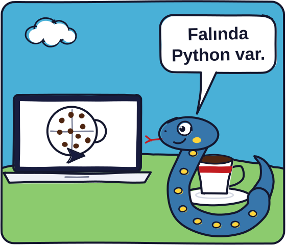
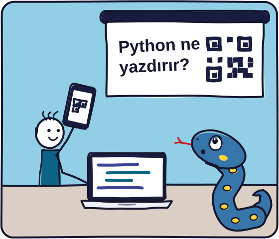
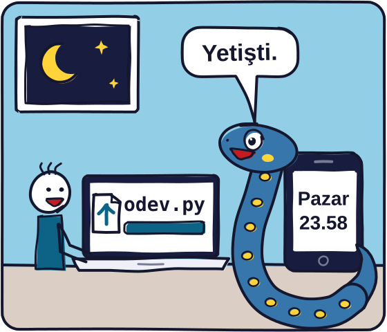
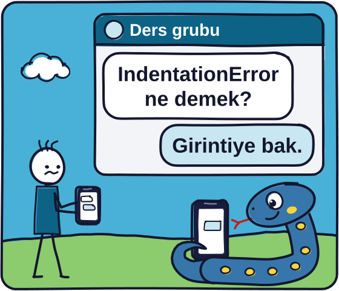

Beş haftanın sonunda ekrana kahve fincanı çizen, içine telve serpip falınıza bakan programı kendiniz yazabileceksiniz.
- Saat ve yer
- Her salı, 18.00, E4 (Elektrik-Elektronik Mühendisliği, Beytepe; haritada aç)
- Tarih
- 20 Ekim-17 Kasım 2026
- Ön bilgi
- Gerekmez, sıfırdan başlıyoruz. İlk dersten önce, derste kullanacağınız dizüstü bilgisayarda Kurulum sayfasındaki adımları tamamlayın.
- Etkinlik
- IEEE Hacettepe'nin ProgrammixV eğitimlerinden biri, Elektrik-Elektronik Mühendisliği Bölümü'nün koordinasyonunda (IEEE duyurusu, bölümün paylaşımı, bölümün haberi)

Program
Her dersin iki yarısı var, tabloda 1A ve 1B diye geçiyor.
| Ders | Konular | Slaytlar |
|---|---|---|
| Ders 120 Ekim Salı |
1ABilgisayar ve Python, ilk program, comment ve error messages 1BValue ve type, |
Slaytlar |
| Ders 227 Ekim Salı |
2AReassignment, 2BComparison ve logical operators, |
Slaytlar |
| Ders 33 Kasım Salı |
3A 3BList, tuple, nested loops, |
|
| Ders 410 Kasım Salı |
4AMutable ve immutable, aliasing, 4BFunction, parameter, return value, scope ve |
|
| Ders 517 Kasım Salı |
5A 5B |
Slaytlarda O tuşuna basınca bütün slaytlar bir ızgarada açılıyor, istediğinize tıklayıp gidebilirsiniz. Belli bir slayda gitmek için G'ye basıp sağ alttaki slayt numarasını yazın ve Enter'a basın.
Ödevler
Ödev bağlantısı GitHub'daki ödev reposunu açıyor: .py dosyası, konu özeti ve kontrol.py orada.
- Ödev 1teslim formu
- Ödev 2teslim formu
- Ödev 3
- Ödev 4
- Ödev 5
Derslerin işleyişi
Derslere dizüstü bilgisayarınızla gelin, kodu derste birlikte PyCharm'da yazacağız.
Bir konuyu öğrendikten sonra slaytta “Python ne yazdırır?” soruları gelecek. Telefonunuzla QR kodu okutup cevabınızı seçiyorsunuz, sonuçları da ekranda birlikte konuşuyoruz.

Değerlendirme
Her dersten sonra, o derse kadar gördüklerimizle yapabileceğiniz bir ödev var. Final sınavıyla ilgili ayrıntılar daha sonra paylaşılacak.
Ödev bir .py dosyası. Görevler ve beklenen çıktılar dosyanın içinde, siz TODO satırlarını dolduruyorsunuz.
Dosyayı dersten sonraki pazar 23.59'a kadar o ödevin teslim formuna yükleyin. Son güne kadar dosyanızı değiştirebilirsiniz. Geri bildirimi formdaki e-posta adresinize göndereceğim.

İletişim
Sorularınızı dersin WhatsApp grubuna yazabilirsiniz.
